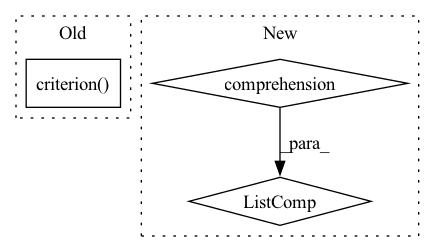

Pattern ID :10802

Before Change
preds = F.interpolate(preds, size=labels.shape[1:], mode="bilinear", align_corners=False)
n_min = labels[labels != self.ignore_label].numel() // 16
loss = self.criterion(preds, labels).view(-1)
loss_hard = loss[loss > self.thresh]
if loss_hard.numel() < n_min:
After Change
def forward(self, preds, labels: Tensor) -> Tensor:
if isinstance(preds, list):
return sum([w * self._forward(pred, labels) for (pred, w) in zip(preds, self.aux_weights)])
return self._forward(preds, labels)
In pattern: SUPERPATTERN
Frequency: 4
Non-data size: 3
Instances
Fragment ID: 37164590
Project Name: sithu31296/semantic-segmentation
Commit Name: b68900992fb24dd5166b2b34e3d35d19493d747d
Time: 2021-08-21
Author: sithu31296@gmail.com
File Name: utils/losses.py
M Class Name: OhemCrossEntropy
N Class Name: OhemCrossEntropy
M Method Name: forward(3)
N Method Name: forward(3)
M Parent Class: nn.Module
N Parent Class: nn.Module
M File Name: utils/losses.py
N File Name: utils/losses.py
M Start Line: 25
M End Line: 37
N Start Line: 46
N End Line: 49
'>
Before Change
(view_global, view_local, grid_global, grid_local), _, _ = batch
z_global, z_global_local_features = self.forward(view_global)
z_local, z_local_local_features = self.forward(view_local)
loss = self.criterion(
z_global=z_global,
z_local=z_local,
z_global_local_features=z_global_local_features,
z_local_local_features=z_local_local_features,
grid_global=grid_global,
grid_local=grid_local,
)
return loss
def configure_optimizers(self):
optim = torch.optim.SGD(model.parameters(), momentum=0.9, lr=0.06)
After Change
views_and_grids = batch[0]
views = views_and_grids[: len(views_and_grids) // 2]
grids = views_and_grids[len(views_and_grids) // 2 :]
features = [self.forward(view) for view in views]
loss = self.criterion(
global_view_features=features[:2],
global_view_grids=grids[:2],
local_view_features=features[2:],
'>
Fragment ID: 37164589
Project Name: lightly-ai/lightly
Commit Name: d9289cdee9de1d8fb56b07719ea6485b966079d3
Time: 2023-04-03
Author: 43336610+guarin@users.noreply.github.com
File Name: examples/pytorch_lightning_distributed/vicregl.py
M Class Name: VICRegL
N Class Name: VICRegL
M Method Name: training_step(3)
N Method Name: training_step(3)
M Parent Class: pl.LightningModule
N Parent Class: pl.LightningModule
M File Name: examples/pytorch_lightning_distributed/vicregl.py
N File Name: examples/pytorch_lightning_distributed/vicregl.py
M Start Line: 39
M End Line: 49
N Start Line: 39
N End Line: 48
'>
Before Change
score = F.upsample(
input=score, size=(h, w), mode="bilinear")
loss = self.criterion(score, target)
return loss
class OhemCrossEntropy(nn.Module):
After Change
weights = config.LOSS.BALANCE_WEIGHTS
assert len(weights) == len(score)
return sum([w * self._forward(x, target) for (w, x) in zip(weights, score)])
class OhemCrossEntropy(nn.Module):
'>
Fragment ID: 37164588
Project Name: chenjun2hao/ddrnet.pytorch
Commit Name: 3ce340bc520946fb220e83075f6e015bbe87cfe5
Time: 2019-12-12
Author: hsfzxjy@gmail.com
File Name: lib/core/criterion.py
M Class Name: CrossEntropy
N Class Name: CrossEntropy
M Method Name: forward(3)
N Method Name: forward(3)
M Parent Class: nn.Module
N Parent Class: nn.Module
M File Name: lib/core/criterion.py
N File Name: lib/core/criterion.py
M Start Line: 20
M End Line: 28
N Start Line: 36
N End Line: 42
'>
Before Change
(view_global, view_local, grid_global, grid_local), _, _ = batch
z_global, z_global_local_features = self.forward(view_global)
z_local, z_local_local_features = self.forward(view_local)
loss = self.criterion(
z_global=z_global,
z_local=z_local,
z_global_local_features=z_global_local_features,
z_local_local_features=z_local_local_features,
grid_global=grid_global,
grid_local=grid_local,
)
return loss
def configure_optimizers(self):
optim = torch.optim.SGD(model.parameters(), momentum=0.9, lr=0.06)
After Change
views_and_grids = batch[0]
views = views_and_grids[: len(views_and_grids) // 2]
grids = views_and_grids[len(views_and_grids) // 2 :]
features = [self.forward(view) for view in views]
loss = self.criterion(
global_view_features=features[:2],
global_view_grids=grids[:2],
local_view_features=features[2:],
'>
Fragment ID: 37164587
Project Name: lightly-ai/lightly
Commit Name: d9289cdee9de1d8fb56b07719ea6485b966079d3
Time: 2023-04-03
Author: 43336610+guarin@users.noreply.github.com
File Name: examples/pytorch_lightning/vicregl.py
M Class Name: VICRegL
N Class Name: VICRegL
M Method Name: training_step(3)
N Method Name: training_step(3)
M Parent Class: pl.LightningModule
N Parent Class: pl.LightningModule
M File Name: examples/pytorch_lightning/vicregl.py
N File Name: examples/pytorch_lightning/vicregl.py
M Start Line: 39
M End Line: 49
N Start Line: 39
N End Line: 48